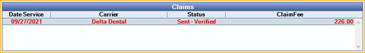

ERA Match with Claim
If Open Dental cannot automatically find matching claims for an ERA, then users are prompted to find the correct claim.
In an ERA, in the Claims Paid grid, double-click on an EOB. If a matching claim is not found, the ERA 835 Claim Select window opens..

When attempting to automatically match ERAs with a claim, Open Dental looks for this criteria:
- Claims with a matching date of service and claim fee.
- Claims with one or more of the following:
- Claims with a matching claim identifier (it must be an exact match or partially match at least the first 15 characters of the ERA Claim Identifier).
- Claims with a matching patient first name and last name (not case sensitive), with an exact subscriber ID match or partial match of all but the last 1 or 2 characters.
Claim identifiers are viewable on the Edit Claim - Misc Tab.
Claim Filters
Change the filters to find the claim associated with the ERA.

Find: Click to search for a patient.
Date From/To: The date of service on a claim.
Claim Fee: The total fee on a claim (i.e., total fee billed to insurance).
Click Refresh to update the results.
Claims
All claims for the selected patient are listed in this grid. Claims matching the filter criteria are listed in red text. Select a claim from the list to view procedure detail.
Columns: Columns reflect claim information as it is entered in Open Dental.
- Date Service: Date of Service.
- Carrier: Insurance carrier.
- Status: Claim status (e.g., Sent-Verified, Received).
- ClaimFee: Total fee billed to insurance.
Procedure Matching Details

The Procedure Matching Details show a list of procedures on the selected claim. If they match the ERA, they display in green. If they do not match the ERA, they display in red. When matching procedures, Open Dental looks for the following criteria:
- Procedure matches via a unique identifier (ProcNum).
- Procedures that do not match via the unique identifier must match all of the following:
- Procedure Code (ProcCode)
- Procedure Fee (ProcFee)
- Procedure Status (ProcStatus)
Columns:
- ProcCode: Procedure code from Open Dental claim.
- ProcFee: Fee billed to insurance from Claim Procedures ( claimprocs ).
- ProcStatus: Procedure status from Claim Procedure. Blank indicates Not received
- IsMatch: Y indicates a matching procedure on both the ERA and selected claim. N indicates there is no match.
- EraCode: Procedure code from the ERA.
- EraFee: Fee from the ERA.
A procedure in black indicates the procedure is on the Open Dental Claim and not an ERA or has been marked received.
Matching a Claim
All claims attached to the selected patient are displayed in the Claims grid, follow the steps below to match the correct claim to the ERA.
- Select a claim from the Claims grid to view procedure details.
- Verify the claim details in the Procedure Matching Details grid.
- Once the correct claim has been determined for the ERA, click OK.
- If the claim in Open Dental does not match the ERA procedure details (see above), the claim must be detached from the ERA and processed outside of the ERA window. See ERA Workflow, Detaching a Claim.
- If an error message appears, see steps below for how to proceed.
- Proceed to Process ERA.
Error Message When Attempting to Match a Claim
If information on the claim and ERA do not match, the user may receive an error message when attempting to match. Below are error messages that may occur and how to proceed.
Error: A matching claim was found but the patient name the carrier sent does not match the patient on the claim.
Solution: Click OK to continue processing the claim on the ERA. Users should verify the claim is correct before processing it as part of the ERA.
Error: Date of service on claim does not match date of service on ERA. Expected 00/00/0000
Solution: Detach the claim from the ERA in order to process. The claim cannot be processed through the ERA window.
Error: Claim fee on claim does not match ERA. Expected 000.00
Detach the claim from the ERA in order to process. The claim cannot be processed through the ERA window.
If a claim needs to be detached:
If the correct claim is selected, but the user is unable to proceed with processing through the ERA window, the claim must be detached from the ERA and processed from the Account Module instead. See ERA Workflow: Detaching a Claim for detailed steps.